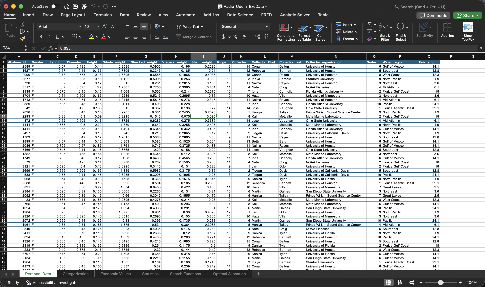
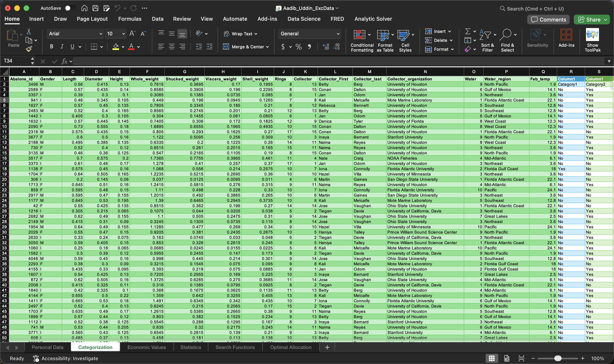
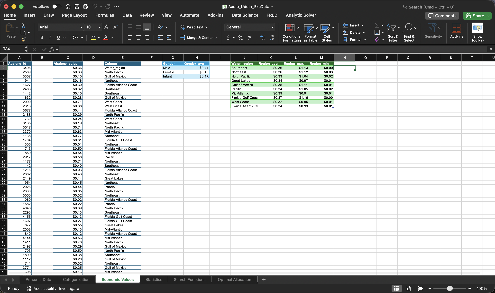
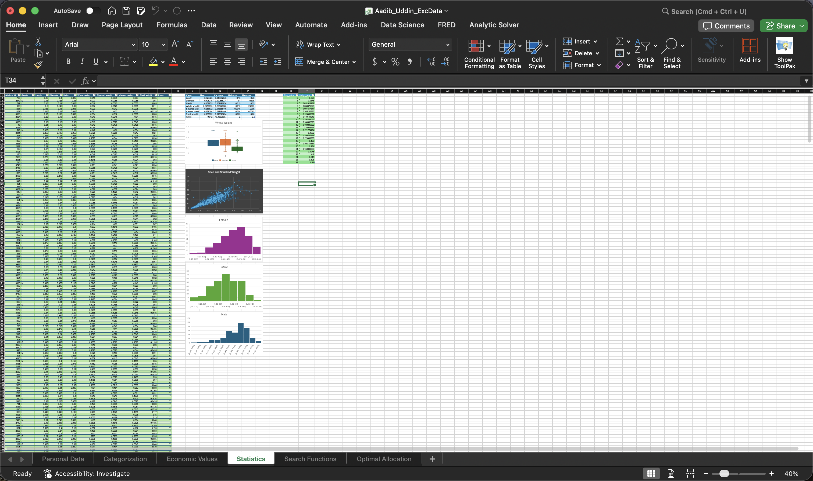
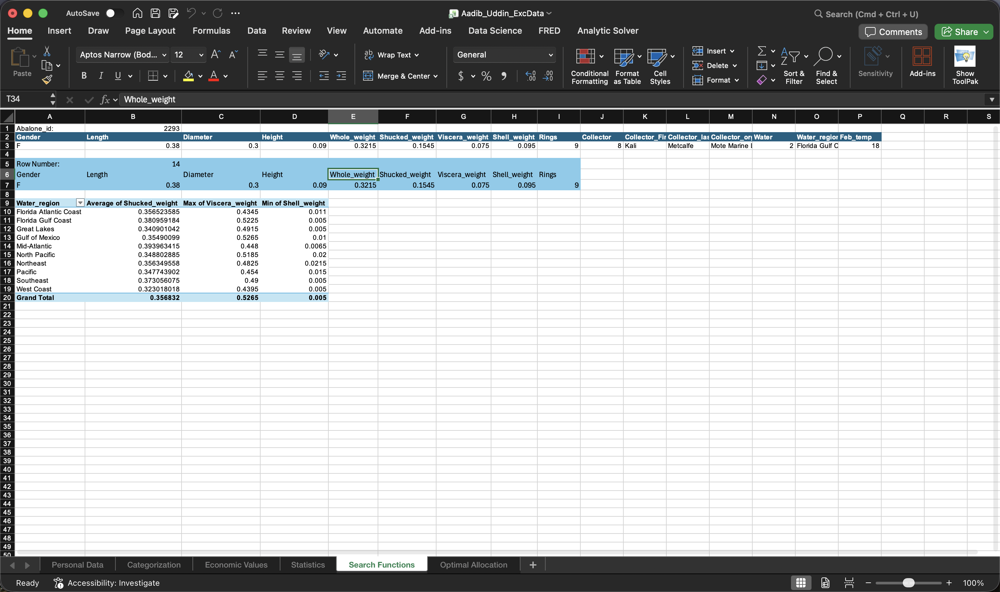
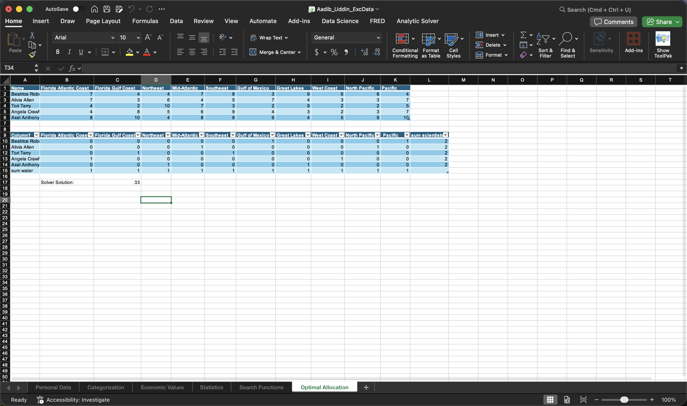

A multi-sheet Excel workbook for categorizing, valuing, and statistically analyzing abalone research data
The raw imported dataset — 1,000 abalone specimens with physical measurements and collector metadata.

Each record is run through category rules (based on 20+ biological characteristics) and flagged Yes/No.

Calculated economic value per specimen, then averaged by gender and by collection region.

Descriptive statistics and charts computed across the full dataset for each biological measurement.

Lookup functions (VLOOKUP/INDEX-MATCH) let a user pull a full record by ID or by row number.

A solver-driven assignment matrix optimally allocating 5 collectors across 10 regions.
